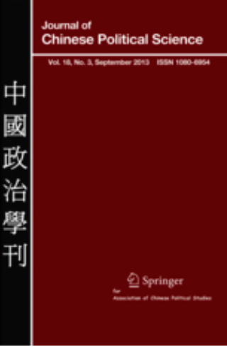
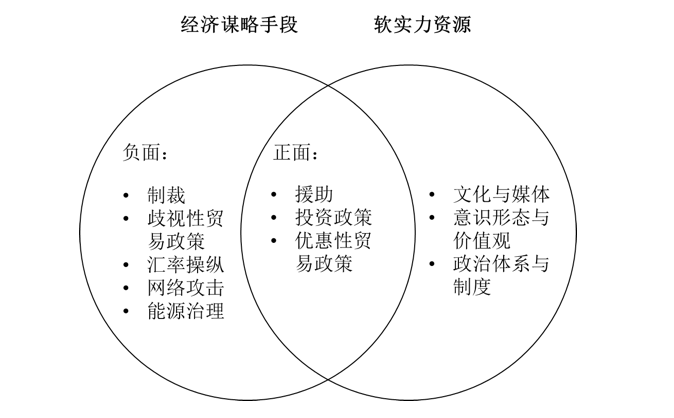
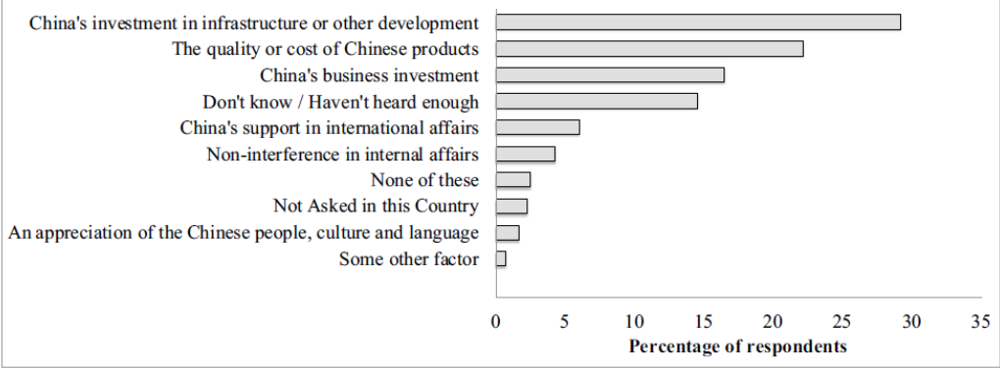
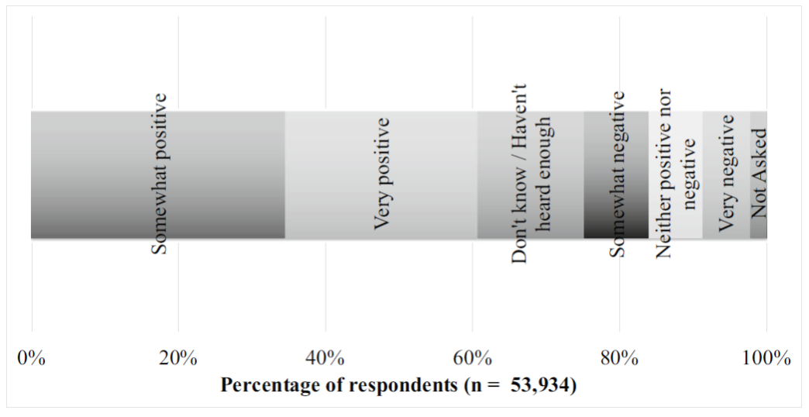
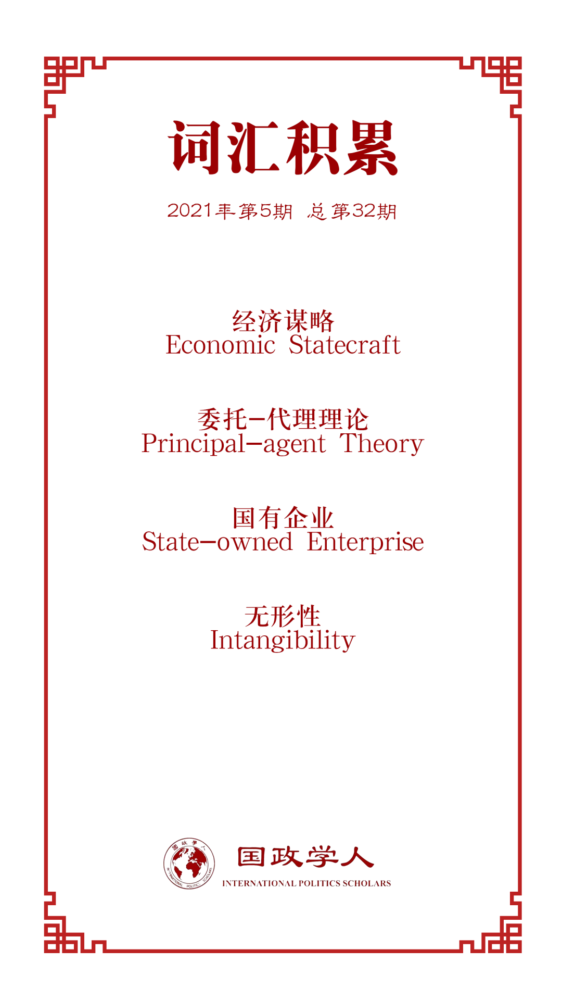

收录于合集

作品简介
【作者】Pippa Morgan，昆山杜克大学讲师，主要研究兴趣为中国对外经济关系的政治经济学、中国对外援助投资与中非关系。
【编译】张鸿儒（山东大学英语与国际政治专业）
【校对】池佳曈、黎开朗
【审核】朱文菡
【排版】林祉欣
【美编】李九阳
【来源】Morgan, P. (2019). Can China’s economic statecraft win soft power in Africa? Unpacking trade, investment and aid. Journal of Chinese Political Science , 24(3), 387-409.
【归档】《国政学人》2021年第5期，总第32期。
期刊简介

《中国政治学刊》（Journal of Chinese Political Science）正式创刊于1995年，主要发表关于中国政治的理论性、政策性和经验性的研究论文、专题评论及书评。2019年该刊影响因子为1.033。
中国的经济谋略能否在非洲赢得软实力？基于贸易、投资、援助三种手段的细分研究
Can China’s Economic Statecraft Win soft power in Africa?
Unpacking Trade, Investment, and Aid
Pippa Morgan
内容提要
提升中国的软实力是中国对非经济谋略（economic statecraft）[1]的一个重要目标，但 现有迹象表明非洲人对中国的观感存在着两极分化的现象 。为了更好解释这一现象，本文基于非洲晴雨表（Afrobarometer）第6轮调查的数据，对中国对非经济谋略的三个重要手段（贸易、投资和援助）进行了细分研究。研究发现，上述三种手段对中国的软实力产生了非常不同的影响：总体而言，涉及中非贸易议题，非洲人多对中国持有负面观感，而涉及中国对非投资及援助议题时，非洲人多持正面态度。通过强调不同的经济手段对中国在非软实力的不同影响，本文有助于人们更好地理解中非关系及中国经济外交。
文章导读
01
中国的在非形象问题
提升软实力是中国的一个战略目标。尽管文化、价值观与制度通常被认为是提升软实力的主要工具，但在非洲，中国主要是通过经济谋略（贸易、援助及投资）来吸引当地国家。随着中非经济关系的不断增强，非洲人对中国在非经济活动的回应却呈现两极分化的现象：一方面，中国被视为一个重要伙伴、一个相对于传统西方援助国而言没有殖民包袱的替代选择，代表着一种成功的发展模式；而另一方面，部分非洲人亦对中国存在着负面观感。
非洲人对华观感为何会存在如此巨大的差异？在贸易、投资和援助三个领域，中国均试图利用经济政策以博得非洲各国领导人及民众的好感，却在不同领域产生了不同的结果，这又是为何？为了回答上述问题，本文探讨了中国政府[2]在中非经济互动中对各商业行为体的监管所扮演的角色， 认为在贸易、投资和援助三个领域，中国政府面临着不同程度的“委托-代理问题” （principal-agent problem，在本文反映为作为委托人的国家并不能有效监管所有作为代理人的商业行为体）。具体而言，在中国对非产品出口及小规模投资方面，中国政府很难有效监管在其中占主导的大量私有企业，而这些私有企业往往以追求利润而非维护国家声誉为首要目的；但在国有企业（state- owned enterprises, SOEs）占主导的对非援助项目和大规模投资方面，中国政府往往能够对这些企业实行强有力的监管，这也就意味着这些国有企业往往能够和国家目标保持一致。
本文基于2016年非洲晴雨表第6轮调查的数据，并以二次文献及媒体报道为补充，对上述主张进行了评估。本轮非洲晴雨表调查询问了来自36个非洲国家的近54000位受访者对中国影响力与中国援助的看法，以及影响他们对华正面或负面观感的因素。调查结果发现：1）非洲人对中国的负面感知主要存在于贸易和小规模投资相关领域，而非西方普遍认为的中国对当地自然资源的开采。2）对非援助及基础设施投资对中国在非形象更多起到了正面作用。3）总体而言，援助与投资对中国在非形象的正面影响要大于贸易的负面影响，非洲人对华整体观感偏正面。这些调查结果与本文先前提出的假设一致。
02
“商业手段”：经济谋略与软实力
（一）经济谋略
经济谋略是指一国 利用经济手段来实现其政治、战略或安全目标，可以将之理解为“利用资本撬动地缘政治”。 相较于军事实力，中国拥有更为丰富的经济资源，因而更倾向于利用经济手段来实现其政治目标，同时根据具体情境选择与对方进行经济合作或对对方实行经济胁迫。中国的“一带一路”倡议便是当代中国经济谋略的一个具体体现。
（二）软实力
软实力一词最早由约瑟夫·奈提出，他将“文化吸引力、意识形态与国际制度”视为软实力的关键资源。根据这一定义，中国的软实力与西方仍然存在不小的差距。但 与西方强调软实力的内容及手段不同，中国更关注软实力的影响结果， 进而部分中国学者将软实力的概念从文化层面的吸引力拓展至经济层面的吸引力。
（三）中国对非经济谋略与在非软实力
当代中国对非经济谋略最早可追溯至20世纪50年代，当时中国主要对非洲社会主义国家及新独立国家提供技术及物质援助。随着经济的不断发展，中国对非贸易、援助与投资也在不断增加，并在2006年中非合作论坛北京峰会后得到日益广泛的关注。中国对非经济谋略与其政治及安全目标紧密相连。根据2015年中国政府发布的第二份对非政策文件，中国不仅仅希望促进中非双方经济的共同发展，也希望能够和非洲各国在“安全上守望相助”“国际事务中团结协作”，同时进一步增强双方“在国际事务中的代表性和发言权”。
中国对非贸易、援助与投资对中国在非软实力而言至关重要，但非洲人对中国在非经济活动却存在两种截然不同的看法。针对这一问题，一些研究强调非洲国家间的异质性，如政客炒作中国议题的程度、西方媒体对当地的渗透程度等；另外一些研究则关注不同类型的经济活动的影响，如贸易与对外直接投资（Foreign Direct Investment）对中国软实力的不同影响。本文即属于后者。
03
“商业手段”的利用：委托-代理问题

图1 经济谋略与软实力资源间的关系
正如前文所提到的，经济谋略有胁迫性及合作性之分。而对软实力的追求，则意味着要使用非胁迫性的经济手段，如提供援助、引导投资和优惠贸易政策等。图1展示的为经济谋略手段与软实力资源之间的关系，可以发现， 援助、投资及贸易等正面经济手段也可以作为提升一国软实力的资源。 进而产生的问题便是：上述三种经济手段在提升中国在非软实力中为何会有不同的收效？面对这一问题，既有研究将“委托- 代理问题”的严重程度作为解释中国经济谋略成败的关键变量。
“委托-代理问题”的产生往往需要满足以下两个条件：首先， 委托人与代理人之间有着不同的利益取向 ；其次， 委托人与代理人之间存在信息不对称的情况 。当上述两个条件满足时，代理人可能会采取有损委托人利益的行为。具体到本文，作为委托人的国家实行经济谋略的首要动机为政治、战略或安全目标，而作为代理人的企业所追求的往往更多是经济收益，同时国家也面临着监管上的困难以及缺乏对企业行为的充分了解。
关于中国对非经济谋略中遇到的“委托-代理问题”，学界已进行了一定研究。在既有研究的基础上， 本文则进一步探讨援助、贸易和投资三种手段面临的“委托- 代理问题”的程度差异，以及这种差异对中国在非软实力的影响。 具体而言，中国对非援助及大规模投资多由国有企业负责，而这些企业更容易受到国家的监管，“委托- 代理问题”影响有限；对非贸易及小规模投资则以中小私有企业为主，对国家来说监管难度较大，进而这些企业可能会出于利润最大化的考量，向当地市场倾销廉价低质的中国产品，损害中国的声誉。
04
援助、贸易与投资：中国对非经济谋略的三种手段
（一）援助
中国自1956年便已开始对非援助，并利用援助项目来实现自身的特定政治目标。一些中国的援助项目直接由部委或省级政府实施，如援非医疗队；另外一些产业部门（如基础设施建设）的援助项目则由商业承包商（主要为国有企业）负责，相关资金主要来自政府拨款或政策性银行贷款。尽管20世纪末期推行的国企改革使得国企的商业属性大大增强，但他们的行为依然容易受到政府监管。这主要出于两方面原因：一方面国企的体型较大，另一方面存在监督国企行为的行政性结构设置。
中国政府对援助项目的监管主要通过两种方式：其一，通过与国有企业相对应的行政管理部门进行监管，如与央企对应的国务院国资委、与地方国企对应的地方国资委；其二，通过商务部（MOFCOM）与驻受援国的经济商务参赞（ECCs）进行监管，其中商务部负责海外援助项目及承包商的批准，驻受援国的经济商务参赞则负责援助项目的日常监督。
（二）投资政策
自1999年提出“走出去”（Go Global）战略以来，推动中国企业对外商业投资便成为中国博得其他国家好感的重要工具。就中国对非投资而言，国企投资主要集中在资源和基础设施部门，而私企投资主要集中在制造业和服务业，且前者的投资数额远大于后者。中国企业对外投资不仅仅要在商务部或对应省级部门登记（2014年后需得到官方的批准），还需要遵守中国政府制定的一系列规则（如遵守当地法律、承担企业社会责任、做好风险管理等）。
中国政府对海外投资监管的成效，高度取决于从事海外投资的企业的类型。就国有企业而言，除却存在有监督其行为的行政管理部门之外，国企对外投资的资金亦相当一部分要通过官方融资机制，进而中国政府可借助这一机制对国企行为实行监管。但就小型私有企业而言，其与中国政府之间的沟通联系本就较为薄弱，加之中国驻目标国经济商务参赞的监管能力有限，中国政府很难对私企情况有全面的把握，更不用说实行有效监管了。例如，2017年麦肯锡咨询公司针对10000家在非中国企业进行的调查结果就与中国官方的数据库在私企数量上存在明显差异。
（三）贸易政策
由于中非间的比较优势与不同的经济结构，中国主要对非出口工业制成品，并主要从一些资源丰富的非洲国家进口初级产品与原材料。中国对非出口的主力是中小私企，有研究显示，在中国对非贸易中，只有9%的企业为国企。在剩余91%的私企之中，相当一部分企业游离在中国政府的视线之外，这反映出的是一种“自下而上”的全球化模式（globalization from below）。
需要指出的是，中国政府也在采取措施改善中非贸易关系。例如中国在义乌开设了非洲产品展销中心以扩大非洲商品对中国的出口，缓解中非间的贸易不平衡现象；同时加强对侵权及劣质产品的打击力度，提升中国对非出口产品的质量。
总体看来，在上述三种经济谋略手段中，中国政府对相关商业行为体的掌控力度存在巨大差异。大型国有企业主要负责援助项目与大规模投资项目的实施，与政府有着紧密的联系且更了解政府的政策，而小型私有企业主要集中在贸易与小规模投资上，相当一部分游离于政府监管之外。进而本文作者提出了以下两个假设：
1. 由于较高水平的国家监管，中国对非援助与大规模基础设施投资更有可能对中国的软实力起到促进作用。
2. 由于较低水平的国家监管，中国对非贸易与小规模投资不太可能对中国的软实力起到促进作用。
05
非洲人对中国的看法：援助、贸易、与投资的影响
（一）公共舆论、外交政策与软实力
软实力的无形性（intangibility）使得其较难被衡量，不过约瑟夫·奈认为民调是一种比较可行的方式。既有一些研究就使用了民调来衡量非洲人对中国援助的看法以及对中国的总体观感。但本文认为，公共舆论能否以及如何真正转化为软实力，取决于公共舆论是否影响了一国的外交政策。
公共舆论是中国软实力的一个重要组成部分，因为对中国持正面态度的民众倾向于支持他们的领导人采取对华友好的外交政策，而公共舆论往往会通过多种渠道对一国政策的制定产生影响。因此，对中国正面的观感（通过民调进行衡量）会提高中国吸引当地政府的能力，也就是中国的软实力。
为了理解援助、投资与贸易对中国软实力的不同影响，本文基于2016年非洲晴雨表第6轮调查的数据，并以二手文献及媒体报道为补充，对作者先前的主张进行了评估。
（二）“魅力攻势”：是什么促进了中国的正面形象？

图2 有利于中国在非形象的因素
图2（原文为Figure 5）展示了受访民众对“下列哪个因素最有利于中国（在贵国）的形象”的回答结果。可以发现，中国对非洲基础设施建设和发展的支持（包括援助和投资）对中国的形象发挥了最大的正面影响。需要特别指出，尽管西方主流叙述对中国在非基础设施建设多持批评态度，但现有信息表明中国国有企业与西方发达国家企业在这方面并无太大差异，且非洲民众对中国援助多持有正面态度。
（三）又是什么损害了中国的在非形象？
图3 不利于中国在非形象的因素
图3（原文为Figure 7）展示了受访民众对“下列哪个因素最不利于中国（在贵国）的形象”的回答结果。可以发现，中国对非产品出口对中国形象有着最不利的影响（近35%的受访民众选择了这一选项）。但一个有趣的现象是，也有超出20%的受访民众对中国廉价产品持有正面态度（见图2），对于这种矛盾现象，一个可能的解释是不同收入群体对中国廉价产品有着不同看法。
除中国对非产品出口之外，另外一个有损中国在非形象的重要因素为“中国企业抢走了当地人的饭碗”。中国企业在非洲投资会为当地创造大量就业，但中国大量廉价商品的流入也会抢占当地相关行业的市场，进而导致当地企业破产和工人失业。

图4 受访者对华的整体态度
总体而言，非洲晴雨表第6轮调查结果显示非洲民众整体对华持有正面观感（见图4，原文Figure 8）。一个可能的解释是： 中国对非援助和基础设施投资给中国形象带来的正面影响要超出劣质产品大量涌入当地市场给中国形象带来的负面影响。
06
小结
本文探讨了中国是如何利用贸易政策、投资政策与对外援助来提升在非软实力，并借助“委托- 代理”理论来理解在何种情况下以及为何中国对非经济谋略在提升中国软实力方面会成功或失败。具体而言，在国有企业占主导的中国对非援助及大规模投资领域，中国政府对国有企业能够实行强有力的监管，进而非洲民众在上述领域对中国多持正面态度；而在私有企业占主导的中非贸易和私人投资领域，中国政府很难对私有企业实行有效监管，进而相关企业行为可能会损害当地民众的利益，有损中国在当地的形象。
本文有以下两点主要贡献：其一，本文有助于运用“委托- 代理”理论来理解中国对非洲及其他地区经济谋略的相关研究；其二，本文有助于理解普通非洲民众对中国在当地经济活动的看法，而这一点在学界尚未得到足够重视。此外，本文也提醒我们，对中国在非经济存在的相关研究也需更加重视小规模商业行为体的行为。
最后，本文将非洲作为一个整体进行研究，但实际上中国经济谋略对自身软实力的影响也因国家而异。这可以是进一步的研究方向。
译者评述
本文以非洲晴雨表第6轮调查的数据为基础，通过对贸易、投资与援助三个经济谋略手段的细分研究，发现非洲民众对中国的观感存在两极分化的现象，并利用“委托- 代理”理论对这一现象产生的原因提出了自己的解释。本文作者认为，作为委托人的国家与作为代理人的商业行为体之间存在着利益取向的偏差和信息的不一致，进而委托人对代理人实行监管的程度则是国家目标能否得到实现以及多大程度实现的关键。具体而言，在援助与大规模投资上占主导的国有企业更容易受到国家的监管，因而在经济活动中更关注中国在非形象，进而非洲民众在上述领域对中国多持正面态度；而在贸易与小规模投资领域，国家对占主导的私有企业实行有效监管的难度较大，因而这些企业更多关注自身经济利益而非国家利益，一定程度上损害了中国在当地的形象。
译者认为，本文最大的一个亮点是为我们呈现了一个 多层次、多领域的中国对非经济谋略，一定程度上有利于打破现有对中国参与非洲事务的刻板印象 ：一方面，存在有中国政府、国有企业、私有企业等多层主体，各主体之间亦存在着博弈，而非西方国家所普遍认为的一个由国家统筹主导的“中国（集团）”（China Inc.）[3]；另一方面，中非经济互动存在着贸易、投资、援助三个具体领域，在不同领域商业行为体的行为及非洲民众对中国的观感亦有所不同。
本文使用的数据为2016年非洲晴雨表公布的第6轮民调结果，而在2016年之后该机构又进行了2轮调查，其中第8轮调查的初步结果已于2020年11月发布。根据最新一轮的调查结果，我们可以发现，与第6轮调查相比，非洲民众对华仍整体持正面态度，但比例有所下降，其中在获得中国贷款及援助较多的国家，多数受访者对中国可能带来的“债务陷阱”表达了担忧[4]。正如本文作者所提到的，公共舆论往往会通过多种渠道对一国的外交政策的制定产生影响，在中美战略竞争日益明朗化的今天，非洲民众对华观感的变化值得重视和进一步研究。
参考文献
[1]economic statecraft是指一国利用经济手段实现其政治、战略或安全目的，但在国内尚无对此的统一准确翻译。为了与偏向国内治理的“经济治国术”及与英文economic strategy相对应的“经济战略”等翻译有所区分，本文将economic statecraft译为“经济谋略”，欢迎进一步探讨。
[2]此处对应英文为Chinese state，译文中的“中国政府”是指存在于中国的一整套的政治体系（广义政府），而非仅仅是作为government的行政执行机构（狭义政府）。
[3]Josephine Appiah-Nyamekye Sanny and Edem Selormey, “AD407: Africans regard China’s influence as significant and positive, but slipping”, Afrobarometer, November 17, 2020, https://afrobarometer.org/publications/ad407-africans- regard-chinas-influence-significant-and-positive-slipping, 访问时间2021年4月28日。
[4]沙伯力、严海蓉、石含笑、魏源：《中国企业在非洲：问题、策略与出路》，载《文化纵横》，2016年第2期，第46~55页。
词汇整理

文章观点不代表本平台观点，本平台评译分享的文章均出于专业学习之用, 不以任何盈利为目的，内容主要呈现对原文的介绍，原文内容请通过各高校购买的数据库自行下载。
国政学人
支持学术公益与知识传播
微信扫一扫赞赏作者 __赞赏
已喜欢，对作者说句悄悄话
取消 __
发送给作者
发送
最多40字，当前共字
上一页 1/3 下一页
长按二维码向我转账
支持学术公益与知识传播
受苹果公司新规定影响，微信 iOS 版的赞赏功能被关闭，可通过二维码转账支持公众号。